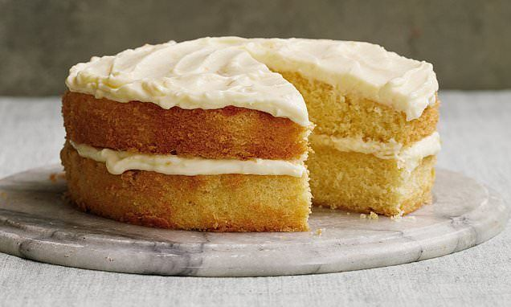

Simple Cake Recipe

Description
This cake has an impressively well-risen deep sponge,
flecked with soft orange peel,
and using the whole clementine gives a wonderful moistness.
Everyone loves this!
Ingredients
- 275g (10oz) cold baking spread, plus extra for greasing
- 1 large or 2 small clementines (see tips, about 125g/4½ oz), peel left on
- 275g (10oz) caster sugar
- 275g (10oz) self-raising flour
- 4 large eggs
For The Icing
- 250g (9oz) full-fat mascarpone cheese
- 75g (3oz) butter, softened
- 175g (6oz) icing sugar, sifted
Steps
- You will need two 20cm (8in) round, loose-bottomed sandwich tins. Preheat the oven to 180C/160C fan/gas 4, then grease the tins with baking spread and line each base with a disc of baking paper.
- Place the whole clementine(s) with skin on in a pan of water and cover with a lid. Bring to the boil, then simmer for 30-40 minutes until soft. Leave to cool, then slice into quarters and remove any pips or bits of pith. Roughly chop the flesh and peel to a pulp and transfer to a bowl.
- Measure the baking spread, sugar and flour into a bowl and add the eggs. Beat together with an electric hand whisk until light and fluffy, then stir in all but 1 tablespoon of clementine pulp. Divide the mixture into the tins and level the tops.
- Bake in the oven for about 30-35 minutes until well risen and springy to the touch. Leave to cool in the tins until cold enough to handle, then turn out on to a wire rack to cool down completely. Peel off the lining paper from each sponge (see tips).
- Meanwhile, make the icing. Whisk the mascarpone, butter and icing sugar together until smooth and fluffy, then stir in the reserved clementine pulp.
- Place one sponge on a serving plate and spread over half the icing, then sandwich together with the second sponge and spread the remaining icing on top.